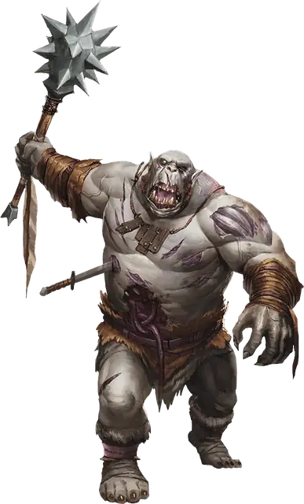

Огр зомби
Ogre Zombie
Большая Нежить, Нейтральная Злая

Класс Защиты 8 Инициатива −2 (8)
Хиты 85 (9к10 + 36)
Скорость 30 футов
| мод | спас | ||
|---|---|---|---|
| СИЛ | 19 | +4 | +4 |
| ЛОВ | 6 | −2 | −2 |
| ТЕЛ | 18 | +4 | +4 |
| мод | спас | ||
|---|---|---|---|
| ИНТ | 3 | −4 | −4 |
| МДР | 6 | −2 | +0 |
| ХАР | 5 | −3 | −3 |
Иммунитеты Яд; Истощение, Отравленный
Чувства Тёмное зрение 60 футов, пассивное Восприятие 8
Языки понимает Общий и Великаний, но не говорит
Опасность 2 (450 опыта; БВ +2)
Особенности
Стойкость нежити. Если урон снижает Хиты Огра зомби до 0, он должен совершить спасбросок Телосложения Сл 5 + полученный урон, если только это не был урон Излучением или от Критического попадания. При успехе Хиты Огра зомби опускаются только до 1.
Действия
Размашистый удар. Бросок рукопашной атаки: +6, досягаемость 5 фт. Попадание: 13 (2к8 + 4) Дробящего урона.
Бонус мастерства +2
Среда обитания Город, Подземье, Царство теней
Сокровища Отсутствуют
Зомби
Неутомимые ожившие трупы
Зомби — это бездумные ожившие трупы, как правило, жутко изуродованные разложением и смертельными ранами. Они служат сверхъестественным силам, которые вдохнули в них жизнь, таким как злые некроманты или духи исчадий. Зомби неутомимы, безжалостны и живучи, а их мёртвая плоть может перенести даже самые тяжёлые ранения. Они способны выполнять простые приказы, но движет ими не разум, а первобытный инстинкт. Мертвецы готовы беспрекословно выполнять любой приказ, работать без устали и пробиваться с боем сквозь строй врагов, однако их легко останавливает препятствие или непредвиденное обстоятельство.
Обычно зомби создаются из трупов Гуманоидов, но останки других существ также могут стать живыми мертвецами. Такие чудовищные зомби наследуют силу, которая была у них при жизни, или часть своих сверхъестественных способностей, но используют их в лучшем случае беспорядочно.
Огры зомби — идеальные работники и неубиваемые боевые машины. Сила и размер этих массивных зомби позволяют им проламывать любые преграды, которые могут остановить их меньших товарищей.